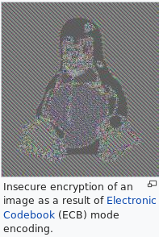

https://en.wikipedia.org/wiki/Block_cipher#Padding
General notes
Some modes provide better security than others
Any block cipher can be used with various modes

Modes of Operation
A block cipher by itself allows encryption only of a single data block of the cipher's block length. For a variable-length message, the data must first be partitioned into separate cipher blocks. In the simplest case, known as the Electronic Codebook (ECB) mode, a message is first split into separate blocks of the cipher's block size (possibly extending the last block with padding bits), and then each block is encrypted and decrypted independently. However, such a naive method is generally insecure because equal plaintext blocks will always generate equal ciphertext blocks (for the same key), so patterns in the plaintext message become evident in the ciphertext output.[17]
To overcome this limitation, several so called block cipher modes of operation have been designed[18][19] and specified in national recommendations such as NIST 800-38A[20] and BSI TR-02102[21] and international standards such as ISO/IEC 10116.[22] The general concept is to use randomization of the plaintext data based on an additional input value, frequently called an initialization vector, to create what is termed probabilistic encryption.[23] In the popular cipher block chaining (CBC) mode, for encryption to be secure the initialization vector passed along with the plaintext message must be a random or pseudo-random value, which is added in an exclusive-or manner to the first plaintext block before it is being encrypted. The resultant ciphertext block is then used as the new initialization vector for the next plaintext block. In the cipher feedback (CFB) mode, which emulates a self-synchronizing stream cipher, the initialization vector is first encrypted and then added to the plaintext block. The output feedback (OFB) mode repeatedly encrypts the initialization vector to create a key stream for the emulation of a synchronous stream cipher. The newer counter (CTR) mode similarly creates a key stream, but has the advantage of only needing unique and not (pseudo-)random values as initialization vectors; the needed randomness is derived internally by using the initialization vector as a block counter and encrypting this counter for each block.[20]
From a security-theoretic point of view, modes of operation must provide what is known as semantic security.[24] Informally, it means that given some ciphertext under an unknown key one cannot practically derive any information from the ciphertext (other than the length of the message) over what one would have known without seeing the ciphertext. It has been shown that all of the modes discussed above, with the exception of the ECB mode, provide this property under so-called chosen plaintext attacks.